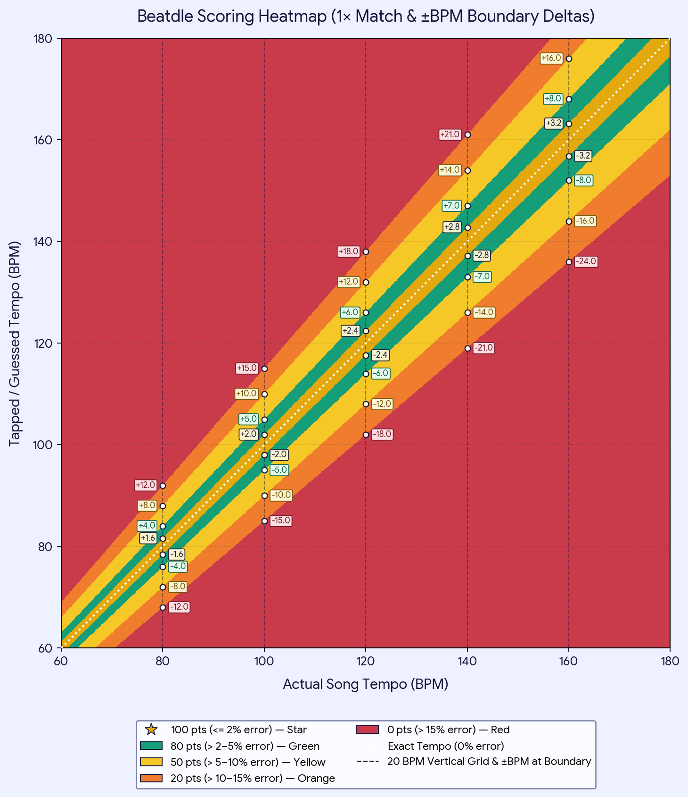

Each of the 5 rounds is worth up to 100 points (500 points max per game). Points are based on your percentage error from the song's actual BPM, after checking octave and tempo multipliers (0.25×, 0.5×, 1×, 2×, 4×). Because the windows are percentage-based, slower songs have tighter BPM margins than faster songs.
| Error Range | Points | Share | 80 BPM | 120 BPM | 140 BPM |
|---|---|---|---|---|---|
| 0% – 2% | 100 | 🟩 | 78 – 82 BPM | 118 – 122 BPM | 137 – 143 BPM |
| > 2% – 5% | 80 | 🟩 | 76–77 or 83–84 | 114–117 or 123–126 | 133–136 or 144–147 |
| > 5% – 10% | 50 | 🟨 | 72–75 or 85–88 | 108–113 or 127–132 | 126–132 or 148–154 |
| > 10% – 15% | 20 | 🟨 | 68–71 or 89–92 | 102–107 or 133–138 | 119–125 or 155–161 |
| > 15% | 0 | 🟥 | < 68 or > 92 | < 102 or > 138 | < 119 or > 161 |

Actual song tempo is on the horizontal axis and tapped tempo is on the vertical axis, with 20-BPM grid lines and BPM deltas shown to 0.1 precision at each scoring boundary.